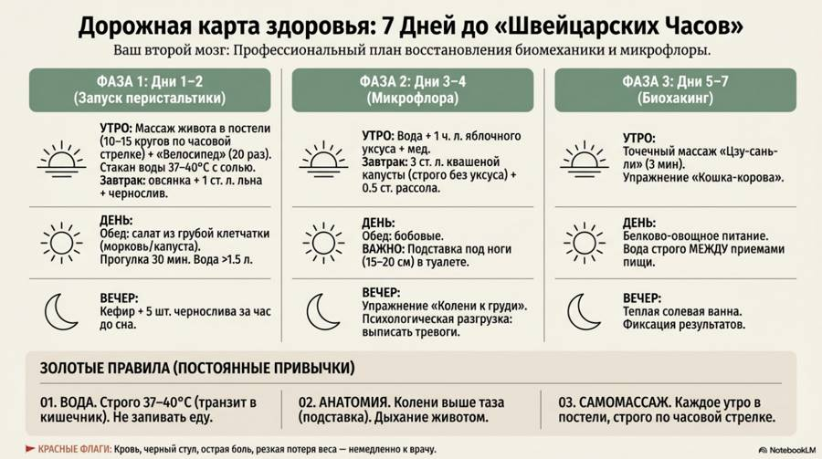
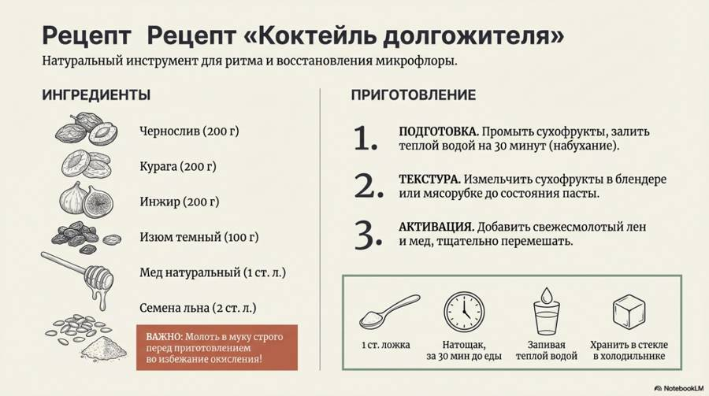

Материалы к выпуску
Выйдет 3 кг каловых камней! Мягкая чистка кишечника дома (Стоит копейки).
Раньше этот выпуск выходил под названием «Выйдет 3 кг каловых камней! Японский метод восстановления кишечника дома и без таблеток»
Здесь протокол из этого выпуска. Скачайте и распечатайте — так проще не забывать о главном каждый день.
7 дней и кишечник здоров


Новые выпуски и карточки — первыми в нашем Telegram-канале.
Открыть Telegram